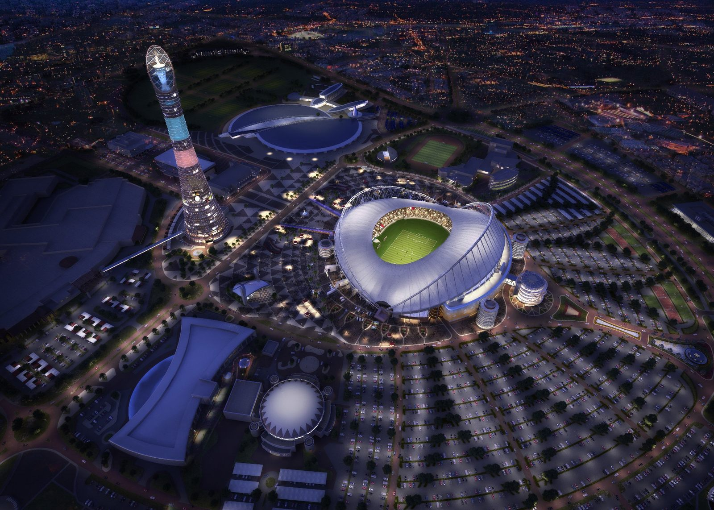

Estádio Internacional Khalifa, também conhecido como Estádio Nacional é um estádio multi-uso localizado em Doha, no Qatar. Possui capacidade para 50.000 espectadores e foi inaugurado no ano de 1976. Foi apresentado como uma das futuras sedes da Copa do Mundo FIFA de 2022.
O estádio foi inaugurado em 1976, em 1992 sediou a Copa do Golfo, em 1997 sediou o Doha Grand Prix de atletismo, atualmente parte da Diamond League, foi renovado em 2005 para sediar os Jogos Asiáticos de 2006 aumentando sua capacidade de 20.000 para 40.000 espectadores, em 2011 sediou os Jogos Pan-Árabes, além da Copa da Ásia de 2011, em 2019 sediou o Campeonato Mundial de Atletismo e a Copa do Mundo de Clubes da FIFA de 2019.
O estádio originalmente seria sede de duas partidas da Copa do Mundo de Clubes da FIFA de 2019. No entanto, como o Estádio da Cidade da Educação, que sediaria outras três partidas não foi concluído a tempo da competição, elas foram remarcadas para serem disputadas no estádio, totalizando cinco jogos do Mundial, incluindo a final.
